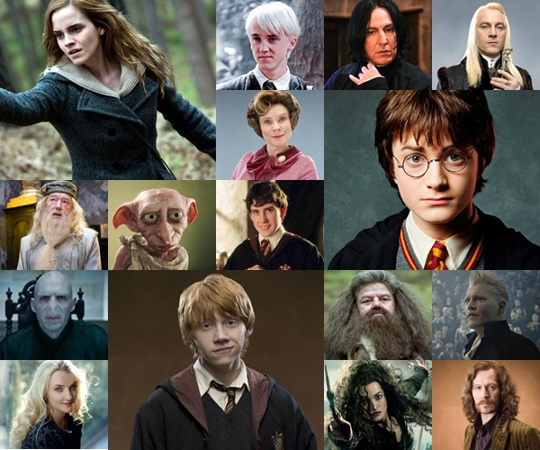

Personajes Principales
- Harry Potter
- Hermione Granger
- Ron Weasley
- Albus Dumbledore
- Severus Snape
- Lord Voldemort

Libros
- Harry Potter y la piedra filosofal
- Harry Potter y la cámara secreta
- Harry Potter y el prisionero de Azkaban
- Harry Potter y el cáliz de fuego
- Harry Potter y la orden del Fénix
- Harry Potter y el misterio del príncipe
- Harry Potter y las reliquias de la muerte
Hogwarts
Hogwarts es la escuela de magia donde Harry y sus amigos estudian. Los estudiantes son organizados en cuatro casas: Gryffindor, Slytherin, Ravenclaw y Hufflepuff.
Este lugar es uno de los elementos más importantes de la saga, porque allí los personajes aprenden magia, hacen amistades y viven muchas de sus aventuras.
Más información
Puedes conocer más sobre el mundo de Harry Potter visitando estos sitios web:
Sitio oficial de Harry Potter Tráiler de la película¿Por qué me gusta?
Harry Potter es una de mis sagas favoritas porque combina fantasía, misterio, aventura y amistad. Me gusta especialmente el mundo mágico y la variedad de personajes que aparecen en la historia.
También me parece interesante cómo los personajes enfrentan diferentes problemas y aprenden la importancia de la amistad, el valor y el trabajo en equipo.
La saga también me inspira a imaginar nuevos mundos y disfrutar de historias llenas de creatividad y aventuras.

Expecto Patronum